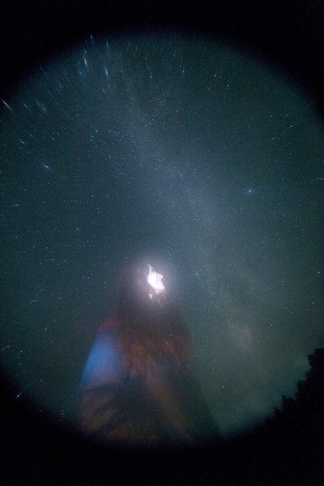
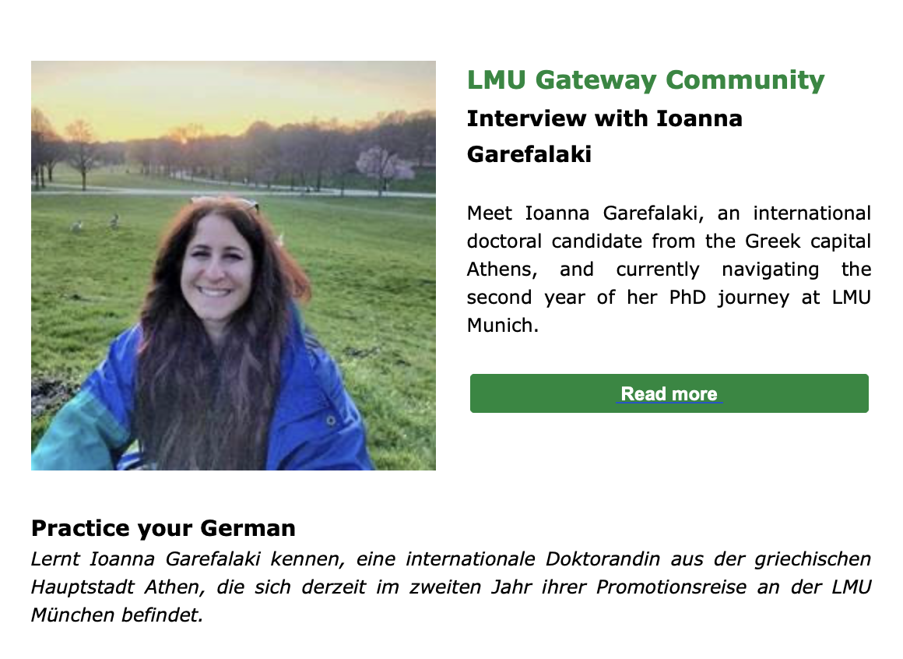
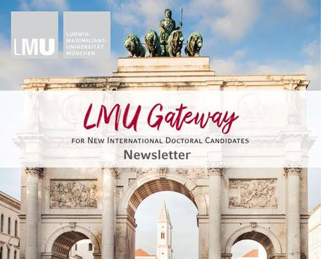
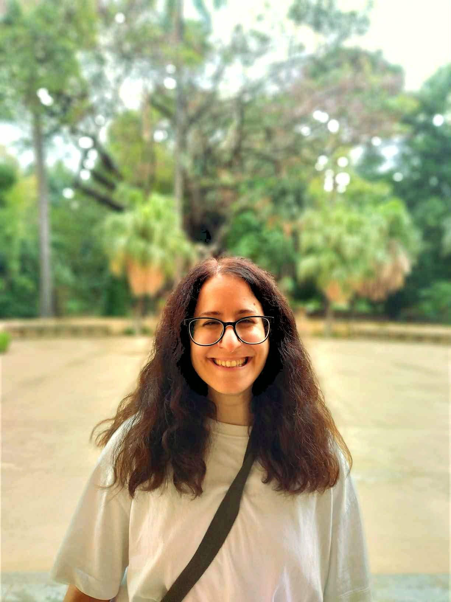

Soapbox Science Munich
Evolution, genetics, epigenetics and DNA methylation on the street, with props, live demonstrations and lots of questions.
View event →Science communication, public engagement, conferences, astronomy, fieldwork, interviews and community activities.
Evolution, genetics, epigenetics and DNA methylation on the street, with props, live demonstrations and lots of questions.
View event →

Using Zoological Museum specimens as conversation starters for evolution, biodiversity, genetics and molecular biology.
View event →
Using sunlight, living leaves and black-and-white image negatives to turn photosynthesis into a visual experiment.
View event →

Public observing, educational astronomy and stargazing activities in Greece.
View activities →

Organisation and public-engagement activities at the national amateur astronomy gathering.
View event →

Evolutionary biology communication, education and engagement between science and society.
View event →

My experience as an international doctoral candidate at LMU Munich and life during the PhD.

Speaker interview introducing my research and public engagement work.
Read interview →